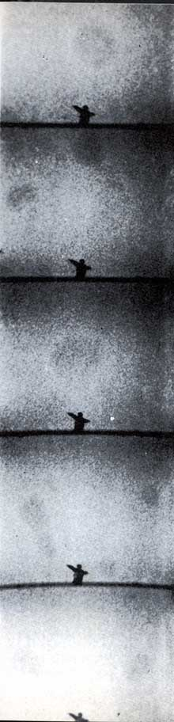

 |
MORE MOVIES OF BIOFORMS
Five successive frames from a motion
picture recording of bioforms on the
Mojave desert in California show the
author performing the Star Exercise de-
scribed in the text, with plasmatic bio-
forms around him. Sequence took place
in less than a quarter second, yet the ob-
jects change position, apparently divide
like amoebae and alter their form even
in this brief time span. Footage was shot
before sunup. Author's view is that such
materializations bear direct functional
relationship to materialization of UFOs.
|